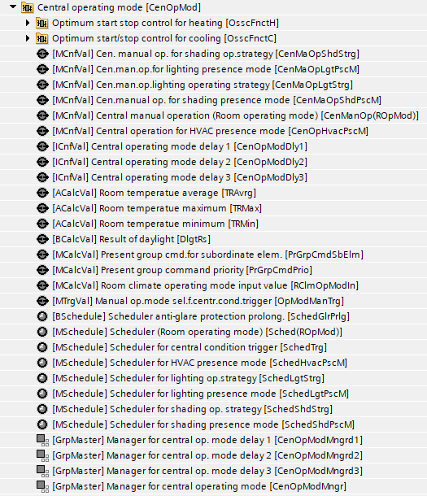
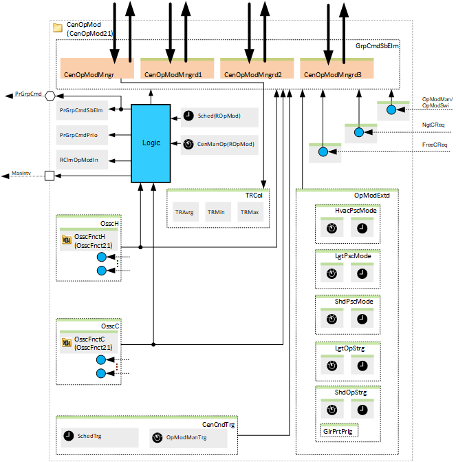
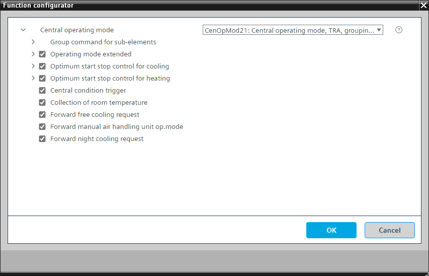
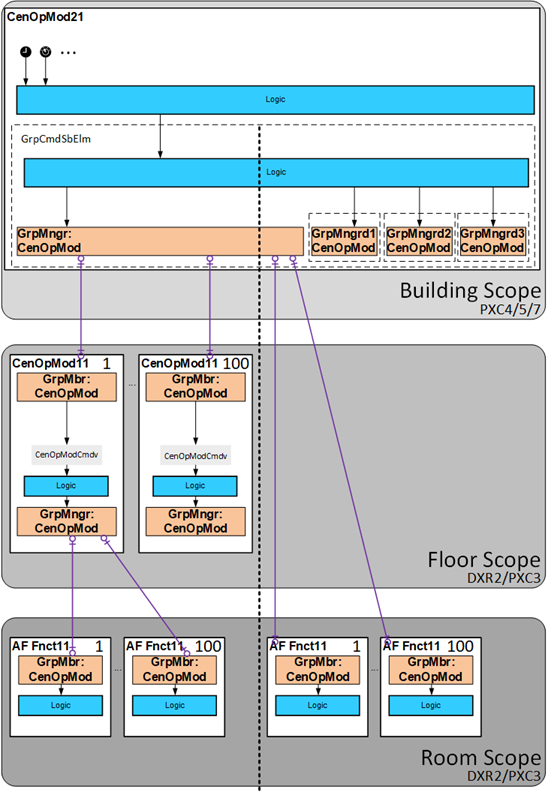
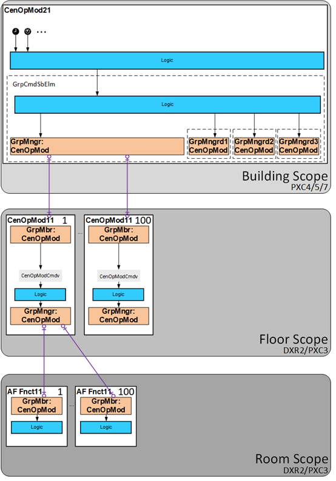
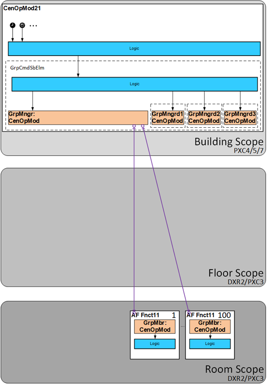

[CenOpMod21] 中央操作模式，与房间进行数据交换（TRA 集成），通过分组机制
Program block, name / node subtype: [CenOpMod21] Central operating mode, data exchange with rooms (TRA integration), via grouping mechanism
Library hierarchy: Coordination
Family: CenOpMod
项目树 | 图表 |
|---|---|
|
 |  |
Configurator


程序块存储在没有 I/Os. 的库中 使用auto-create and auto-connect函数创建 I/Os 和 /or 将它们连接到接口块，例如 R_A、CMD_B。或者，从包含库中预定义 I/Os 的文件夹中取出 I/Os，并从工厂中取出 /or，并将它们连接到接口块。
CenOpMod21 通过组机制将中央命令和操作模式分发到连接的房间自动化区域。命令可以源自调度器或主操作单元。
程序块中最重要的功能是：
- Central operating mode command evaluation
Possible sources include: - Scheduler
- Manual operating mode selection
- Night cooling and/or free cooling request
- Warm-up and/or cool-down request (from optimal start/stop functionality)
- Manual operation of an air handling unit
- Central condition trigger
姓名 | 描述 | 类型 | 报警/通知类 | 趋势/类型 | |
|---|---|---|---|---|---|
PrGrpCmdSbElm | Present group command for subordinate elements | MCalcVal: Multistate calculated value | N/A | 是的，4 | |
PrGrpCmdPrio | Present group command priority | MCalcVal: Multistate calculated value | N/A | 是的，4 | |
RClmOpModIn | Room climate operating mode input value | MCalcVal: Multistate calculated value | N/A | N/A | |
CenManOp(ROpMod) | Central manual operation (Room operating mode) | MCnfVal: Multistate configuration value | N/A | N/A | |
Sched(ROpMod) | Scheduler (Room operating mode) | MSchedule: Multistate scheduler | N/A | N/A | |
CenOpModMngr | Manager for central operating mode | GrpMaster：组经理 | N/A | N/A | |
CenOpModMngrd1 | Manager for central operating mode delay 1 | GrpMaster：组经理 | N/A | N/A | |
CenOpModMngrd2 | Manager for central operating mode delay 2 | GrpMaster：组经理 | N/A | N/A | |
CenOpModMngrd3 | Manager for central operating mode delay 3 | GrpMaster：组经理 | N/A | N/A | |
描述 |
|---|
|
Group command for sub-elements delay 1 属于该选项的元素： Central operating mode delay 1 | ICnfVal: Integer configuration value |
Group command for sub-elements delay 2 属于该选项的元素： Central operating mode delay 2 | ICnfVal: Integer configuration value |
Group command for sub-elements delay 3 属于该选项的元素： Central operating mode delay 3 | ICnfVal: Integer configuration value |
Central condition trigger 属于该选项的元素： 用于中央条件触发的手动操作模式选择器 |MCnfVal: Multistate configuration value Scheduler for central condition trigger | MSchedule: Multistate scheduler |
常温采集 属于该选项的元素： 室温平均 |ACalcVal: Analog calculated value Room temperature minimum | ACalcVal: Analog calculated value Room temperature maximum | ACalcVal: Analog calculated value |
Forward manual air handling unit operating mode |
Forward night cooling request |
Forward free cooling request |
Optimum start stop control for heating |
Optimum start stop control for cooling |
Operating mode extended |
More details about the option "Optimum start stop control for heating"
Optional elements
姓名 | 描述 | 类型 | 报警/通知类 | 趋势/类型 | |
|---|---|---|---|---|---|
|
OsscFnctH | Optimum start stop control for heating | N/A | N/A | ||
Further options
描述 |
|---|
|
Forward OSSC request |
Temporary comfort after warm-up |
如果选项“Optimum start stop control for heating" 处于活动状态，将读取以下信号（创建 BACnet 参考）：
- RefRoom'RHvacCoo'PltOpModDtr'PltOpMod
- RefRoom'RHvacCoo'TR
- RefRoom'RHvacCoo'SpTRDtr'SpHCmf
- RefRoom'RHvacCoo'TCtlH'DSpHPcf
- RefSegm'HVAC'xxx'xxxHwDmd or RefSegm'HVAC'xxx'xxxDevMod or RefSegm'HVAC'xxx'xxxAirDmd
- CenWthStn'TOa
- Hcr'HydCrt'HwDmd
根据这些信号，OSSC 逻辑计算并向房间发出预热请求。选项“Forward OSSC request“ 必须停用。
More details about the option "Optimum start stop control for cooling"
Optional elements
姓名 | 描述 | 类型 | 报警/通知类 | 趋势/类型 | |
|---|---|---|---|---|---|
|
OsscFnctC | Optimum start stop control for cooling | N/A | N/A | ||
Further options
描述 |
|---|
|
Forward OSSC request |
Temporary comfort after cool down |
如果选项“Optimum start stop control for cooling" 处于活动状态，将读取以下信号（创建 BACnet 参考）：
- RefRoom'RHvacCoo'PltOpModDtr'PltOpMod
- RefRoom'RHvacCoo'TR
- RefRoom'RHvacCoo'SpTRDtr'SpCCmf
- RefRoom'RHvacCoo'TCtlH'DSpCPcf
- RefSegm'HVAC'xxx'xxxChwDmd or RefSegm'HVAC'xxx'xxxDevMod or RefSegm'HVAC'xxx'xxxAirDmd
- CenWthStn'TOa
- Ccr'HydCrt'ChwDmd
根据这些信号，OSSC 逻辑计算并向房间发出冷却请求。选项“Forward OSSC request“ 必须停用。
如果 OSSC 存在外部逻辑（例如，在冷却回路中），则必须禁用此选项，并且选项“Forward OSSC request“必须激活。该选项从外部逻辑读取冷却请求并将其转发到房间。
More details about the option "Operating mode extended"
Optional elements
姓名 | 描述 | 类型 | 报警/通知类 | 趋势/类型 | |
|---|---|---|---|---|---|
|
CenOpHvacPscM | Central operation for HVAC presence mode | MCnfVal: Multistate configuration value | N/A | N/A | |
SchedHvacPscM | Scheduler for HVAC presence mode | MSchedule: Multistate scheduler | N/A | N/A | |
CenMaOpLgtPscM | Central manual operation for lighting presence mode | MCnfVal: Multistate configuration value | N/A | N/A | |
SchedLgtPscM | Scheduler for lighting presence mode | MSchedule: Multistate scheduler | N/A | N/A | |
CenMaOpShdPscM | Central manual operation for shading presence mode | MCnfVal: Multistate configuration value | N/A | N/A | |
SchedShdPscM | Scheduler for shading presence mode | MSchedule: Multistate scheduler | N/A | N/A | |
CenMaOpLgtStrg | Central manual operation for lighting operating strategy | MCnfVal: Multistate configuration value | N/A | N/A | |
SchedLgtStrg | Scheduler for lighting operating strategy | MSchedule: Multistate scheduler | N/A | N/A | |
CenMaOpShdStrg | Central manual operation for shading operating strategy | MCnfVal: Multistate configuration value | N/A | N/A | |
SchedShdStrg | Scheduler for shading operating strategy | MSchedule: Multistate scheduler | N/A | N/A | |
Further options
描述 |
|---|
|
Anti-glare protection prolongation |
中的选项“Operating mode extended“可以覆盖（例如，根据中央调度程序）房间中存在模式或操作策略的设置。
例如，房间中的设置“Lighting presence mode对于房间操作模式“经济”，“考虑存在和缺席”。在夜间（例如，从晚上 10 点到凌晨 5 点），这可能是不需要的，因为保安人员正在建筑物中移动并拥有自己的手电筒，并且不希望灯亮起并显示他们所在的位置。在这种情况下，中央功能将“无”发送到“Lighting presence mode”当时（例如，晚上 10 点到凌晨 5 点）。
选项“Anti-glare protection prolongation"计算日出和日落时间，并在日出之前和日落之后以及工作日添加一些时间，并覆盖"Shading operating strategy” 房间运行模式“经济”改为“Anti-glare protection".
Central operating mode command evaluation
如果中央操作模式命令来自调度程序，则以优先级 15 运行；如果手动操作模式选择处于活动状态，则以优先级 8 运行。
Night cooling, free cooling, warm-up and cool-down requests
CenOpMod21 可以从空气处理装置或其他逻辑接收夜间制冷、自然制冷、预热和 /or 冷却请求（或使用其自己的可选 OSSC 逻辑计算预热和 /or 冷却请求），并将它们传输到房间自动化。如果地区条件允许，可以切换该地区的工厂运行模式。
Manual central air handler mode
此外，该区域的设备运行模式可通过优先级为 7 的手动空气处理机模式切换至舒适模式。为此，空气处理机的 OpModMan 或 OpModSwi 必须连接到相应的接口（选项：前向手动空气处理机运行模式）。
Central condition trigger
CenOpMod21 可以将中央条件触发器（1：无，2：能源效率条件，3：舒适条件）分配到房间自动化区域。根据触发类型，手动操作会因发送的触发而重置。例如，发送能效触发器会根据区域中参数化的设置方式重置手动设置的区域温度设定点以及照明和遮阳手动操作。
Room temperature collection
CenOpMod21 可以通过分组机制从房间自动化收集和评估房间温度。
Delayed operation
另有三名集团经理延迟运营。目标是将房间分配给更多的组经理，然后确保并非所有房间同时更改其运行模式。
CenOpMod21 属于构建范围，可以通过两种方式使用：
- For commanding subordinate central functions in the floor scope.
- For commanding subordinate room controllers in the room scope.
下图显示了这两种方式的概述。

两种选择不太可能同时存在。以下两种拓扑是可能的。
中央功能的级联是必要的。 | 中央功能的级联是不必要的。 |
 |  |